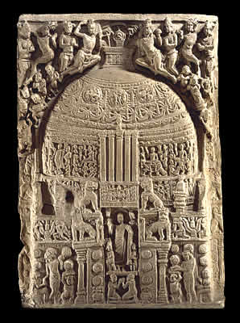

Drum Slab
Stupas were places of worship as well as important symbols of the Buddha's death. This relief shows a stupa with the Buddha in the doorway surrounded by worshippers. Scenes like this help us to imagine what the Amaravati Stupa may have once looked like. |